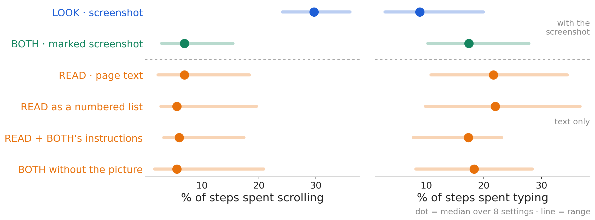
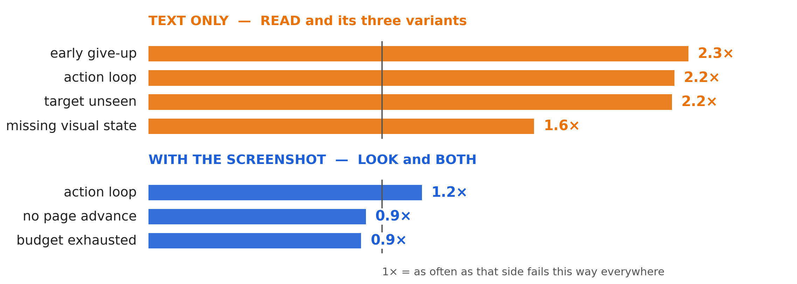
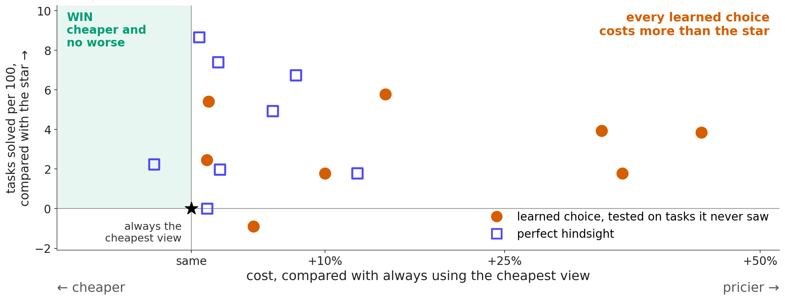
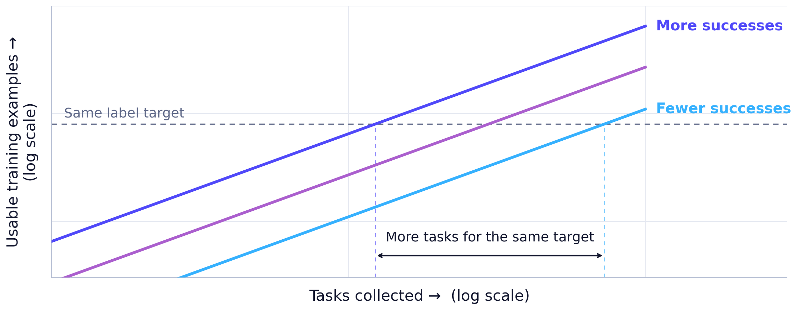

Look, read, or both?
It depends on the task.
Nothing we trained knows it yet.

Come to the board — try your own task, live in all three views.
Jiaming Wei
Supervisors: Prof. María Pérez-Ortiz · Zekun Wu
MSc thesis · REALM workshop, EMNLP 2026

Medians over 8 settings: LOOK scrolls in about 30% of its steps, every other view about 6%; it types about half as often

Each side vs its own failures elsewhere · text-only: several over 2× · LOOK and BOTH: none stands out · six VisualWebArena settings
If it always picked the right view…
16 more solved. 20% less cost.
Classifieds benchmark · large model · perfect hindsight, not Claude results


Fixed-rate illustration, not a fitted law · our estimate where labels are scarce: at least 2–4× more tasks
Come to the board — try your own task, live in all three views.
Jiaming Wei · jiaming.wei.25@ucl.ac.uk